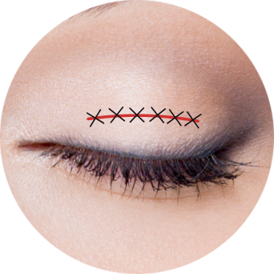
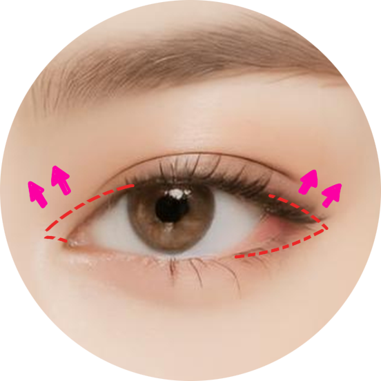
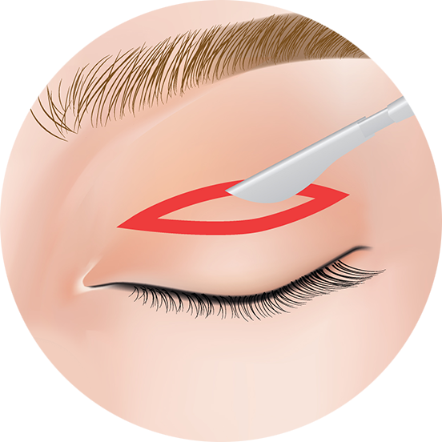
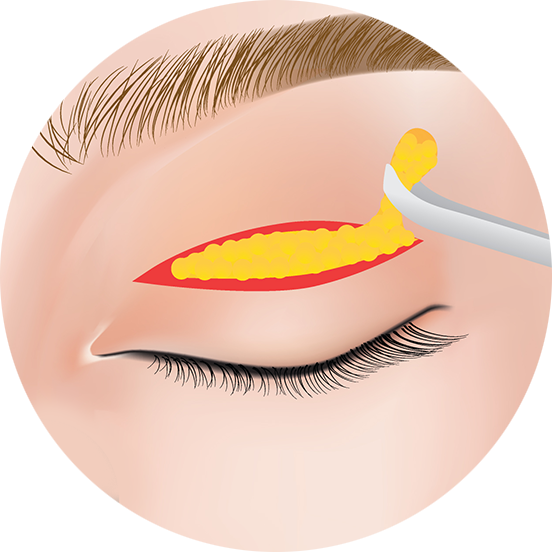
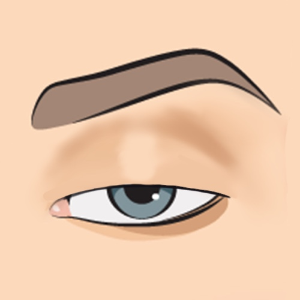
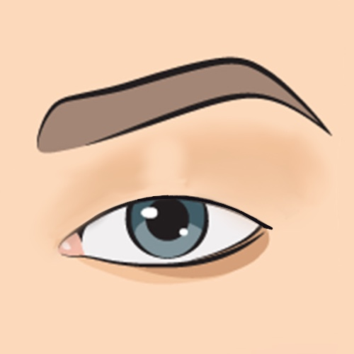
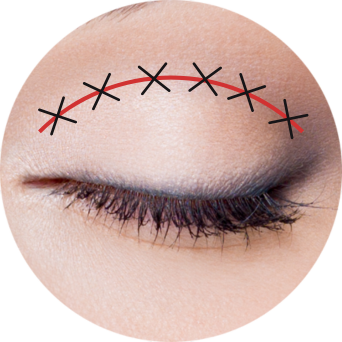
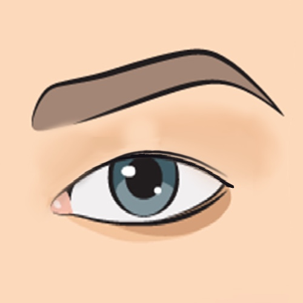
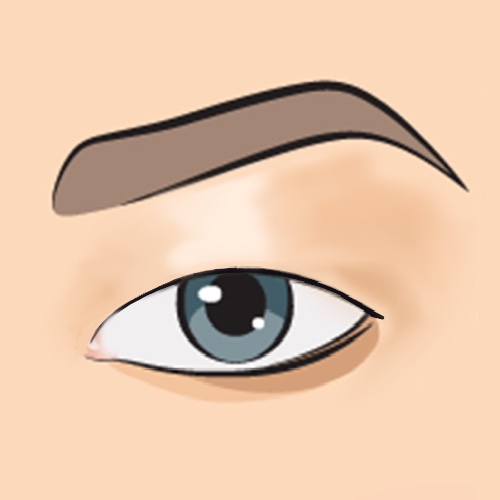

แกรนด์ นิว ไลฟ์ ศูนย์ปรึกษาศัลยกรรมเกาหลี และบริการ พาไปศัลยกรรมเกาหลี โรงพยาบาลชั้นนำ ถูกกฎหมาย ไทย - เกาหลี
จากประสบการณ์การทำศัลยกรรม ที่เกาหลีด้วยตัวเองและด้วยการดูแลเคสลูกค้ามาตลอด มากกว่า 8 ปี
สอบถามรายละเอียด
จากประสบการณ์การทำศัลยกรรม ที่เกาหลีด้วยตัวเองและด้วยการดูแลเคสลูกค้ามาตลอด มากกว่า 8 ปี
สอบถามรายละเอียดดวงตา ถือเป็นหนึ่งในจุดเด่นของใบหน้า ที่จะทำให้องค์ความสวยโดยรวมของเราดูดีขึ้น หลายคนจึงมุ่งมั่นอยากที่จะมีดวงตาที่สวยงาม เพื่อดึงดูดคนด้วยเสน่ห์ เพิ่มความมั่นใจ และยกระดับความงามให้ตนเอง ให้เทคนิคที่ทันสมัยจากประเทศเกาหลีเผยตัวตนที่สวยงามที่สุดของคุณผ่านศิลปะการศัลยกรรม
การทำตาสองชั้นสไตล์เกาหลี ให้มีดวงตาสองชั้นที่ไม่ได้แค่กลมโตธรรมดา แต่ยังมีเปลือกตาที่ชัดเจน ทำให้ใบหน้าดูน่ารักและสดใสมากขึ้น การศัลยกรรมตาสองชั้นเกาหลีจึงเป็นหนึ่งในรายการศัลยกรรมยอดนิยมของประเทศเกาหลี ที่แม้แต่ผู้ชายก็ให้ความสำคัญ เพราะตาสองชั้นแบบเกาหลีนั้นไม่ได้แค่เพิ่มเสน่ห์ให้กับผู้หญิง แต่การศัลยกรรมตาผู้ชาย เกาหลี ก็ยังเป็นที่นิยมมากเช่นกัน การศัลยกรรมตาแบบเกาหลี นอกจากจะเป็นรายการศัลยกรรมยอดนิยมเพื่อเพิ่มเสน่ห์แล้ว การทำตาสองชั้นยังมีเทคนิคมากมายที่ช่วยแก้ไขปัญหาต่าง ๆ ของดวงตาได้อีกด้วย
ชาวเอเชียส่วนใหญ่มักมีดวงตาที่ดูเล็ก ซึ่งเกิดการการมีชั้นตาที่มีไขมันและหนังตาส่วนเกินเยอะ ส่งผลให้ชั้นตาหายไปกลายเป็นชั้นตาเดียว และหลายคนมีอาการมองเห็นไม่ชัดร่วมด้วยเช่นกัน การศัลยกรรมตาแบบเกาหลีจึงเป็นที่นิยมในหมู่คนเอเชียเพื่อแก้ปัญหานี้และให้ผลลัพธ์ที่น่าพอใจและสวยงาม จึงเป็นเหตุผลที่หลายคนที่ไม่มีปัญหาเกี่ยวกับตาก็ตัดสินใจทำตาแบบเกาหลีเพื่อเพิ่มความสวยงามของดวงตา
หลายคนมีอาการภาวะหนังตาตกจากหนังตาและไขมันเปลือกตาที่มีมากเกินไป ส่งผลให้เปลือกตาบนตกลงมาต่ำมากกว่าปกติ อาการนี้ส่งผลให้คุณภาพการมองเห็นลดลง ชั้นตาทับกันจนมีชั้นตาหลายชั้น นอกจากนี้ยังเกิดอาการแสบตา เคืองตา และรู้สึกหนักที่เปลือกตา ทำให้ลืมดวงตาได้ไม่เต็มตาและเห็นตาดำน้อยลง การศัลยกรรมตาสองชั้นเกาหลีจึงเป็นทางออกที่สามารถแก้ปัญหาเหล่านี้ได้อย่างมีประสิทธิภาพ ผ่านกระบวนการที่ประณีตและแม่นยำ เพื่อสร้างสุขภาพการมองเห็นที่ดีขึ้นและดวงตาที่งดงามสวยงามกว่าเดิม
หลายคนที่ดูเหมือนมีชั้นตาเดียวอาจมีตาสองชั้นหลบในจากไขมันเปลือกตาเยอะได้ ทำให้ดวงตาดูเล็ก ไม่สดใส และเหมือนเหนื่อยล้าตลอดเวลา จนเสียบุคลิกภาพ ตาสองชั้นสไตล์เกาหลีจึงเป็นทางออกเพื่อแก้ไขปัญหาเหล่านั้น เพื่อตัดหนังตาและไขมันเกินออกให้ดวงตาดูใหญ่ขึ้น มีสดใส และมีเสน่ห์ที่ดูดีขึ้น
ดวงตาที่มีภาวะกล้ามเนื้อตาอ่อนแรง จะส่งผลให้ดวงตาลืมขึ้นได้น้อย จนดูปรือ เหมือนง่วงนอนอยู่ตลอดเวลา จากกล้ามเนื้อตาที่อ่อนแรงจนไม่มีกำลังแรงที่จะลืมดวงตาให้เต็ม หลายคนจึงมีอาการมองเห็นผิดปกติหรือลดลง สายตาเอียง ทำให้หลายคนเลือกที่จะเลิกหน้าผากขึ้นเพื่อยกคิ้วให้ช่วยในการลืมตาให้มองได้ชัดมากขึ้น ปัญหาเช่น ริ้วรอย จึงอาจจะเกิดตามมาอีกด้วย การทำตาสองชั้นแบบเกาหลีจึงเป็นทางออกเพื่อแก้ปัญหาสุขภาพนี้
เทคนิคการกรีดชั้นตานั้นจะเป็นการเลาะไขมันและตัดผิวหนังส่วนเกินออกไป เพื่อสร้างชั้นตาสองชั้นให้กับคนไข้ที่มีตาชั้นเดียว เพื่อเสริมความสวยงามและความเป็นธรรมชาติให้กับดวงตารวมถึงแก้ปัญหาสุขภาพอีกด้วย กระบวนการนี้จะกรีดหนังตาบนตาจากหัวตาไปถึงหางตาและสร้างรอยกรีดตามระยะของชั้นตาที่เหมาะสมสำหรับคนไข้แต่ละคน เพื่อให้ผลลัพธ์มีความเหมาะสมและเป็นธรรมชาติที่สุด การกรีดอาจมีขนาดสั้นหรือยาวขึ้นอยู่กับเทคนิคและความต้องการของแต่ละแพทย์ที่ดำเนินการศัลยกรรม
เทคนิคกรีดชั้นตาเหมาะสำหรับผู้ที่มีปัญหาดวงตา เช่น ดวงตาที่มีเปลือกตาชั้นเดียวหรือไม่มีชั้นตา ชั้นตาไม่ชัด ตาสองชั้นหลบใน หรือชั้นตาไม่เท่ากัน และโดยเฉพาะกรณีที่ดวงตามีปัญหาไขมันสะสมที่เปลือกตามากหรือเปลือกตาหนา การกรีดชั้นตาในกรณีเหล่านี้จะช่วยแก้ปัญหาและเสริมความสวยงามได้มีประสิทธิภาพมาก
การเย็บจุดในการศัลยกรรมตาสองชั้น เป็นเทคนิคที่ไม่ต้องทำการตัดหนังตาหรือไขมันเปลือกตาส่วนเกินออก แต่เป็นการเย็บชั้นตาสองชั้นโดยใช้เทคนิคการเย็บตามจุดต่าง ๆ หรือกรีดสั้น
เทคนิคนี้ทำให้เกิดรอยพับชั้นตาอย่างเป็นธรรมชาติ และทำให้เกิดแผลเล็กที่มองแทบไม่เห็น และยังช่วยให้ชั้นตาเข้าที่ไว
เทคนิคการเย็บจุดในการศัลยกรรมตาสองชั้นเหมาะสำหรับคนที่มีดวงตาชั้นเดียว ตาเล็ก และตาหลบใน รวมถึงคนที่มีผิวเปลือกตาบาง ไขมันเปลือกตาน้อย
เทคนิคการเปิดหัวตาและหางตาเป็นการเพิ่มพื้นที่ให้หัวตาและหางตามีความยาวเพิ่มขึ้น ให้ดวงตามีความสมส่วน และมีสัดส่วนที่ออกมาสมมาตรกัน โดยใช้การตกแต่งหัวตาหรือหางตาและทำการเย็บเก็บรายละเอียด เพื่อให้ดวงตาดูมีเสน่ห์และสวยงามมากขึ้น
เทคนิคการเปิดหัวตาและหางตาเหมาะสำหรับผู้ที่มีดวงตาเล็ก ไม่กลมโต มีหนังตาบริเวณหัวตาเยอะ และดวงตา 2 ข้างห่างมากจนอาจทำให้แลดูตาเหล่ การศัลยกรรมเปิดหัวตาและหางตาจะช่วยให้มีดวงตาที่สมส่วนมากขึ้น
เทคนิคการปรับกล้ามเนื้อตาแบบเกาหลี จะเป็นการแบบกรีดที่ใช้ในการปรับกล้ามเนื้อตาให้มีกำลังมากขึ้นและสร้างเส้นชั้นตาให้ดูสมดุลและสวยงามตามธรรมชาติ เทคนิคนี้จะช่วยทำให้ดวงตาดูเปิดกว้างและมีความเป็นธรรมชาติมากยิ่งขึ้นเทคนิคนี้เหมาะสำหรับคนไข้ที่มีกล้ามเนื้อตาอ่อนแรงและหนังตาตก ทำให้เส้นชั้นตาที่มีอยู่ไม่ชัดเจนหรือดูไม่สมดุล เพื่อปรับให้ดวงตาดูสมส่วนกัน และโตมากขึ้น และแบบไม่กรีดซึ่งเป็นเทคนิคการปรับกล้ามเนื้อตาโดยปรับรูปทรงของดวงตาล เน้นการจัดการกับมัดกล้ามเนื้อบริเวณเปลือกตาที่อ่อนแรงให้เกิดการกระตุ้นและยืดกล้ามเนื้อให้ดวงตาดูสดใสและมีชีวิตชีวามากขึ้น นอกจากนี้การกรีดจะเป็นการกรีดยาวทำชั้นตา กำจัดไขมันเปลือกตากรณีคนไข้มีไขมันเปลือกตามากเกินไป หรือตัดหนังตาส่วนนึงออกไปด้วยกรณีคนไข้หนังตาตก พร้อมมัดเย็บกล้ามเนื้อตาไปด้วย สำหรับคนที่มีปัญหากล้ามเนื้อตาอ่อนแรง ดูไม่สดใส
เทคนิคการปรับกล้ามเนื้อตาแบบไม่กรีดเหมาะสำหรับผู้ที่ต้องการมีตาสองชั้นโดยไม่ต้องทิ้งรอยกรีดหรือแผลเป็นบนเปลือกตา หรือผู้ที่มีตาสองชั้นอยู่แล้ว แต่หนังตาตกลงมากเกินไป ทำให้ดวงตาดูไม่สดใส ดูง่วงนอนอยู่ตลอด การปรับกล้ามเนื้อตาแบบไม่กรีดจะช่วยเพิ่มกำลังให้กับกล้ามเนื้อตา ทำให้ดวงตาดูสมมาตรและมีสัดส่วนที่สวยงาม
เทคนิคเย็บจุด-กรีดสั้น
เปิดหัวตาหางตา
กรีดชั้นตา
กรีดชั้นตา2
กล้ามเนื้อตาอ่อนแรง
ตาชั้นเดียว
ทำชั้นตาแบบเกาหลี-กรีดยาว
สองชั้นหลบใน
หนังตาตก
